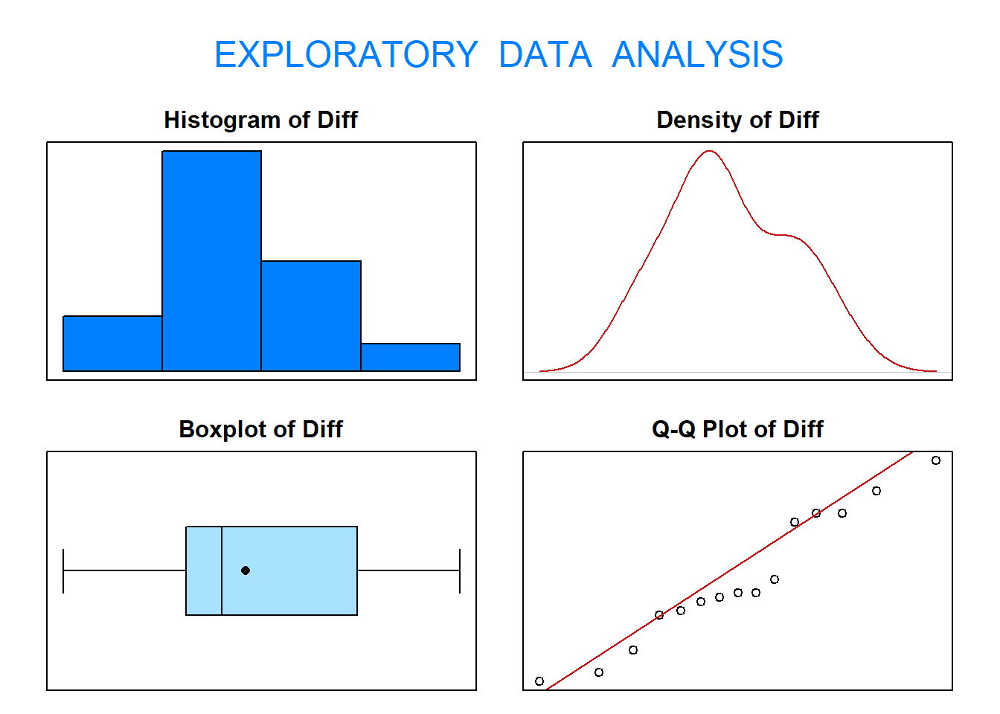
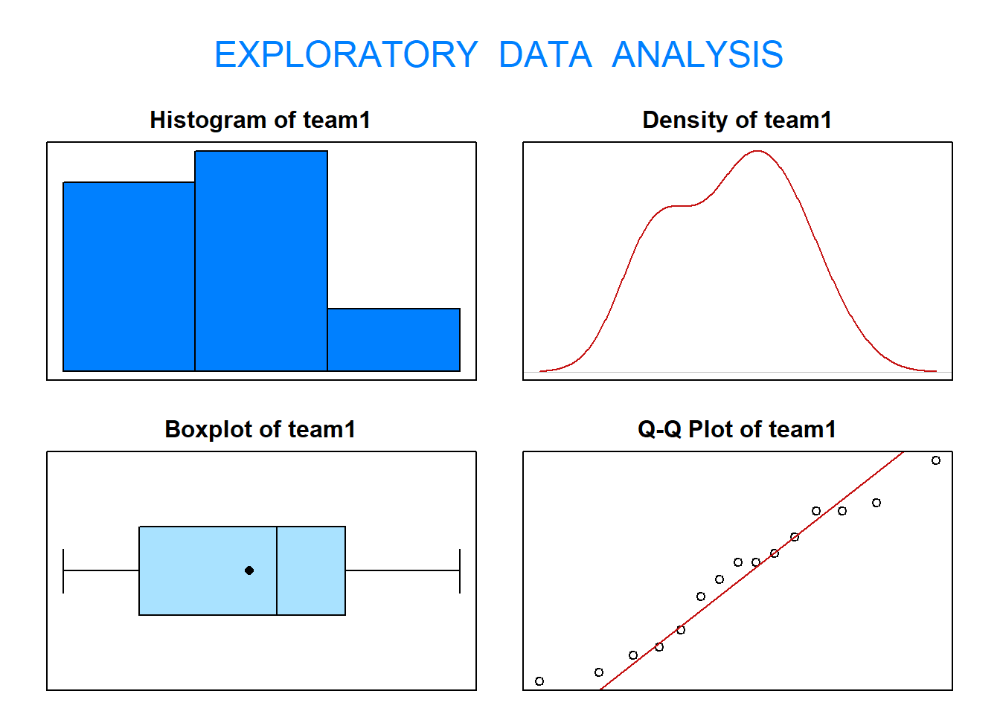

4 Exercise 1: Hubble Telescope Hypothesis Test
The Hubble Space Telescope was put into orbit on April 25, 1990. Unfortunately, on June 25, 1990, a spherical aberration was discovered in Hubble’s primary mirror. To correct this, astronauts had to work in space. To prepare for the mission, two teams of astronauts practiced making repairs under simulated space conditions. Each team of astronauts went through 15 identical scenarios. The times to complete each scenario were recorded in days. The data are stored in the data frame HUBBLE in thr PASWR2 package.
We will aim to answer the questions:
Is one team better than the other?
And if not, can both teams complete the mission in less than 3 days?
Use a 5% significance level for all tests.
4.1 Question: Is one team better than the other?
1a). To answer this question, should we undertake a Welch two-sample \(t\)-test or a paired \(t\)-test?
Each team of astronauts went through 15 identical scenarios. Consequently, the repair times for the two teams are dependent. Start the analysis by verifying the normality assumption required to use a paired \(t\)-test.
1b) Does this data fit the required assumption of normality to perform a hypothesis test?
We can verify the normality assumption of the data using exploratory data analysis (EDA()).

## Size (n) Missing Minimum 1st Qu Mean Median TrMean 3rd Qu
## 15.000 0.000 -2.400 -0.850 -0.100 -0.400 -0.100 1.300
## Max Stdev Var SE Mean I.Q.R. Range Kurtosis Skewness
## 2.600 1.499 2.247 0.387 2.150 5.000 -1.193 0.198
## SW p-val
## 0.462The results from applying the function eda() to the differences between team1 and team2 suggest it is not unreasonable to assume the repair time differences between team1 and team2 follow a normal distribution.
1c) For this question, which set of hypotheses below is correct?
Let \(\mu_{T_1}\) denote the mean repair times for team1, \(\mu_{T_2}\) denote the mean repair times for team2, and \(\mu_D=\mu_{T_1}-\mu_{T_2}\) denote the difference in mean repair times.
The correct null and alternative hypotheses are:
The question is "Is one team better than the other?" Since we do not know which one is better, the question is equivalent to testing if the average difference in repair times for team1 and team2 are different.
\[\begin{align} 1&. \quad H_0 : \mu_{T_1} - \mu_{T_2} = 0 \quad \text{verses} \quad H_1 : \mu_{T_1} - \mu_{T_2} < 0\\ 2&. \quad H_0 : \mu_{T_1} - \mu_{T_2} = 0 \quad \text{verses} \quad H_1 : \mu_{T_1} - \mu_{T_2} > 0\\ 3&. \quad H_0 : \mu_{D}=0 \quad \text{verses} \quad H_1 : \mu_{D} \neq 0\\ 4&. \quad H_0 : \mu_{D}=0 \quad \text{verses} \quad H_1 : \mu_{D} > 0\\ 5&. \quad H_0 : \mu_{D}=0 \quad \text{verses} \quad H_1 : \mu_{D} < 0 \end{align}\]
1d) What is the test statistic (before standardisation)?
- The test statistic chosen is \(\bar{D}\) because \(E[\bar{D}] = \mu_D\).
## [1] -0.1The value of this test statistic is \(\bar{d} = -0.1\).
1e) Step 3 - Rejection Region
Calculate the degrees of freedom,\(df\).
Calculate the critical value for this test.
- \(df = n-1 = 15-1\) so the standardised test statistic is distributed \(t_{14}\). Moreover, since \(H_1\) is a two-sided hypothesis, the rejection region is the \(|t_{obs}| > t_{0.975; 14}\).
- From the statistical tables, the critical value (\(t\)-value that corresponds to our significance level), \(t_{0.975; 14} = 2.1448\).
This can be found using R:
## [1] 2.1447871f) The standardised test statistic under the assumption that \(H_0\) is true and its distribution are \(\frac{\bar{d}−\delta_0}{s_d/\sqrt{n_D}} \sim t_{df}\).
Find the value of standardised test statistic and \(p\)-value using t.test().
## [1] -0.258363## [1] 0.7998863Or use t.test() directly:
##
## One Sample t-test
##
## data: Diff
## t = -0.25836, df = 14, p-value = 0.7999
## alternative hypothesis: true mean is not equal to 0
## 95 percent confidence interval:
## -0.9301447 0.7301447
## sample estimates:
## mean of x
## -0.1This gives the value of standardised test statistic as \(-0.25836\) and the \(p\)-value as \(0.7999\). This code provides the \(p\)-value fully adjusted for a two-tailed test.
1g) Step 4 - Statistical Conclusion
Do we reject our null hypothesis?
1h) Step 5 - English Conclusion
Is there sufficient evidence to suggest one team is better than the other?
4.2 Question: Can team1 complete the mission in less than 3 days
2a) Does team1 fit the normality assumptions required?
We can verify the normality assumption of the data for team1 using exploratory data analysis (EDA()).

## Size (n) Missing Minimum 1st Qu Mean Median TrMean 3rd Qu
## 15.000 0.000 1.000 1.500 2.220 2.400 2.220 2.850
## Max Stdev Var SE Mean I.Q.R. Range Kurtosis Skewness
## 3.600 0.800 0.640 0.207 1.350 2.600 -1.352 -0.052
## SW p-val
## 0.613The results from applying the function eda() to the repair times for team1 suggest it is not unreasonable to assume the repair times for team1 follow a normal distribution.
2b) For this question, which set of hypotheses below is correct?
\[\begin{align} 1&. \quad H_0 : \mu = 3 \quad \text{verses} \quad H_1 : \mu > 3\\ 2&. \quad H_0 : \mu = 3 \quad \text{verses} \quad H_1 : \mu \neq 3\\ 3&. \quad H_0 : \mu = 3 \quad \text{verses} \quad H_1 : \mu < 3\\ \end{align}\]
2c) What is the test statistic (before standardisation)?
The test statistic chosen is \(\bar{X}\) because \(E[\bar{X}] = \mu\).
## [1] 2.22The value of this test statistic is \(\bar{x} = \frac{\sum^n_{i=1}x_i}{n}= 2.22\)
2d) Step 3 - Rejection Region
Calculate the degrees of freedom,\(df\) and the critical value for this test.
\(df = n-1 = 15-1\) so the standardised test statistic is distributed \(t_{14}\), and since \(H_1\) is a lower one-sided hypothesis, the rejection region is the \(t_{obs} > t_{0.05; 14}\)
From the statistical tables, the critical value (\(t\)-value that corresponds to our significance level) is \(t_{0.05; 14} = -1.7613\).
This can be found using R:
## [1] -1.761312e) Find the value of standardised test statistic and \(p\)-value using t.test().
Our standardised test statistic \(= \frac{\bar{x}−\mu_0}{s/\sqrt{n}}\).
## [1] -3.775316## [1] 0.00102414##
## One Sample t-test
##
## data: team1
## t = -3.7753, df = 14, p-value = 0.001024
## alternative hypothesis: true mean is less than 3
## 95 percent confidence interval:
## -Inf 2.583896
## sample estimates:
## mean of x
## 2.22This gives the value of standardised test statistic as \(-3.7757\) and the \(p\)-value \(\mathrm{P}(t_{14} \leq -3.7753) = 0.001024\).
2f) Step 4 - Statistical Conclusion
Do we reject our null hypothesis?
2g) Step 5 - English Conclusion
Is there sufficient evidence that the team1 average mission repair time in less than 3 days?
4.3 Question: Can team2 complete the mission in less than 3 days
3a) Does team2 fit the normality assumptions required?
The exploratory data analysis below suggests that it is not unreasonable to assume the repair times for team2 follow a normal distribution.

## Size (n) Missing Minimum 1st Qu Mean Median TrMean 3rd Qu
## 15.000 0.000 0.400 1.650 2.320 2.600 2.320 2.950
## Max Stdev Var SE Mean I.Q.R. Range Kurtosis Skewness
## 3.800 0.981 0.963 0.253 1.300 3.400 -1.074 -0.350
## SW p-val
## 0.8483b) For this test, find the value of standardised test statistic and \(p\)-value using t.test().
##
## One Sample t-test
##
## data: team2
## t = -2.6835, df = 14, p-value = 0.008911
## alternative hypothesis: true mean is less than 3
## 95 percent confidence interval:
## -Inf 2.766309
## sample estimates:
## mean of x
## 2.32This gives the standardised test statistic as \(-2.6835\) and the \(p\)-value \(\mathrm{P}(t_{14} \leq -2.6835) = 0.008911\).
3f) Statistical Conclusion
Do we reject the null hypothesis?
3g) English Conclusion
Is there sufficient evidence that the team1 average mission repair time in less than 3 days?
This means that for Team 1 and Team 2: